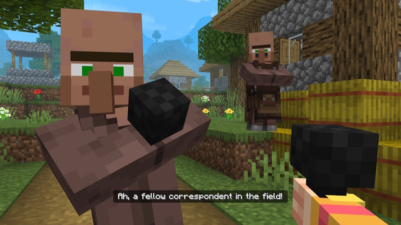
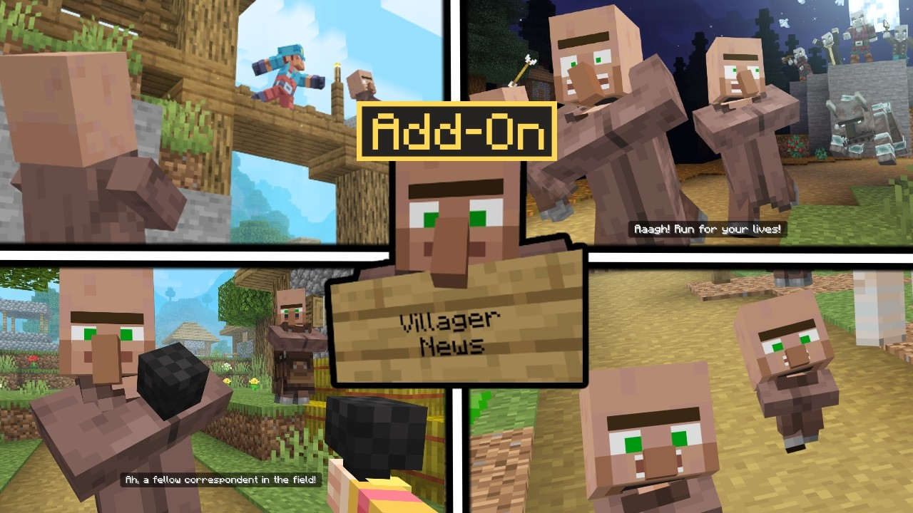
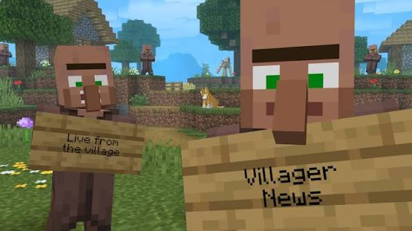

Villager News Mod - Villager News 1.0 add-on for Minecraft Bedrock, Java notes, 2000+ voices, gossip. Oreville and Element Animation. Drop the pack, enable, play. Marketplace zip, extract and load. Official free download. Download:🡇


